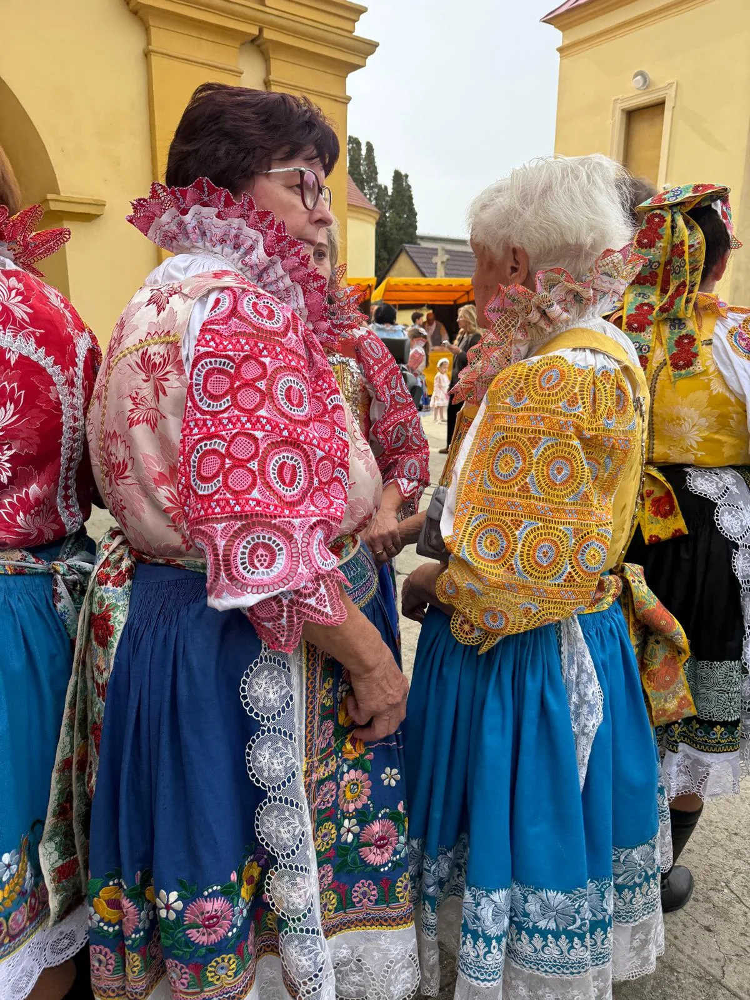
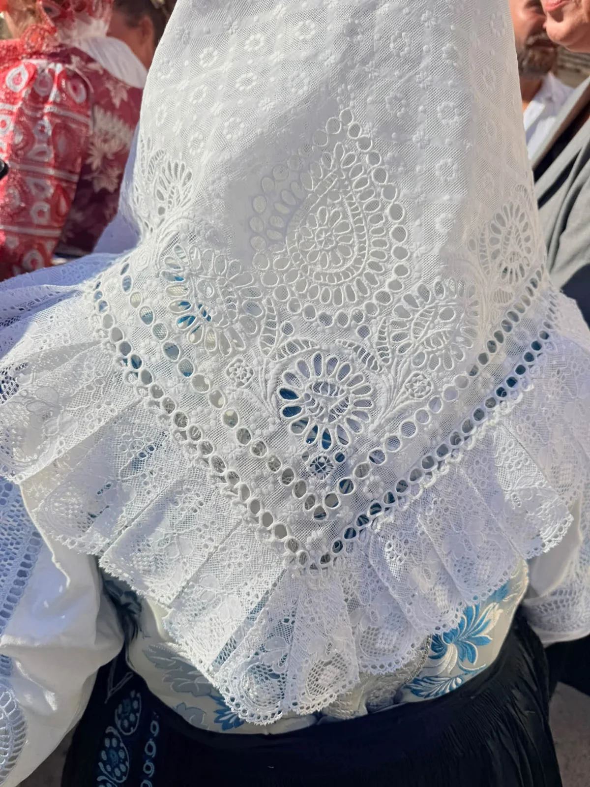
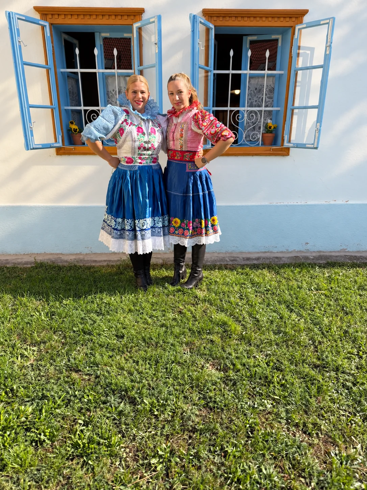
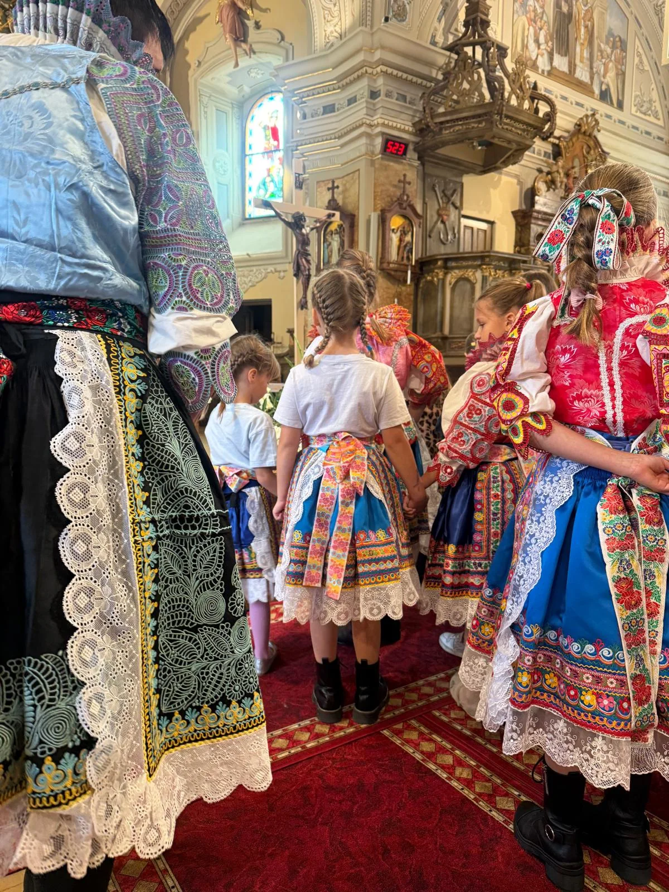
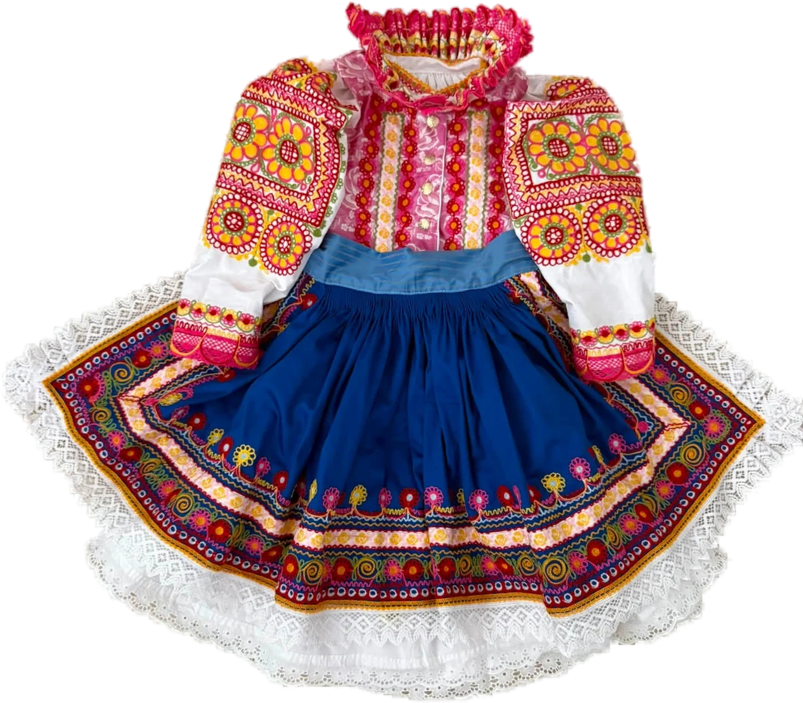
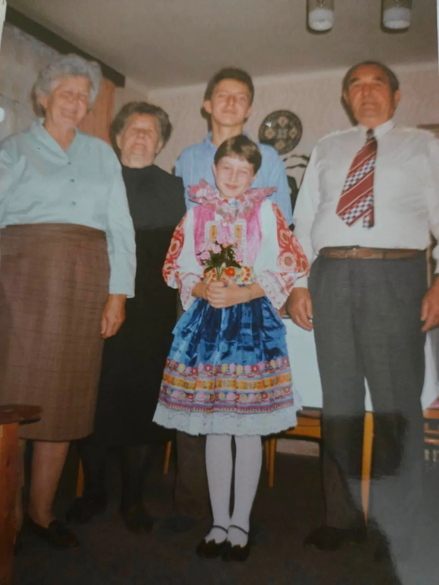
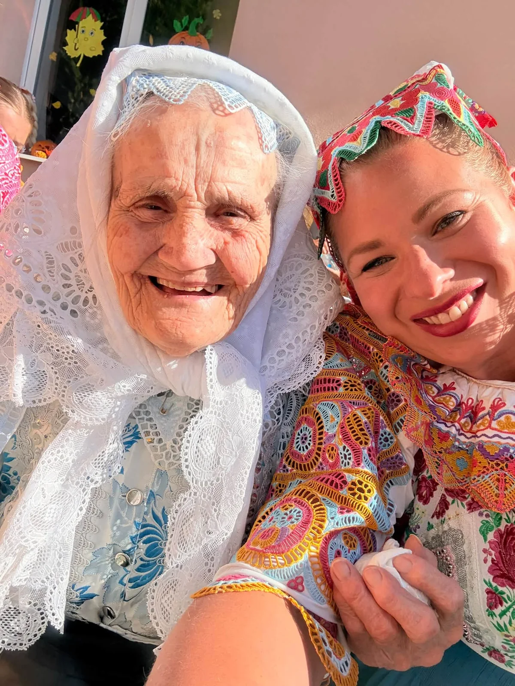
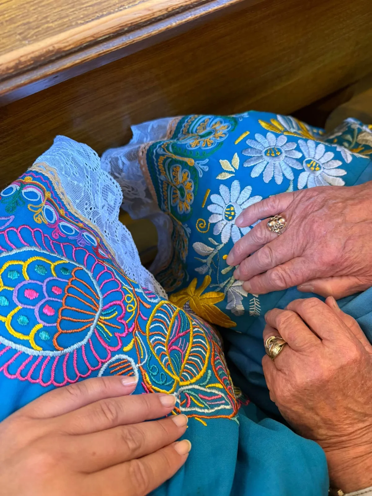

Pozrite sa bližšieZ jedného stehu vzniká celý kroj.
Slovenské remeslá
Trukovanie
Retiazka, ktorú vedie ruka.
Trukovanie je strojová retiazková výšivka. Stroj len ťahá niť do retiazky — látku, smer a tvar ornamentu vedie ruka. Krojárka trukuje na historickom stroji Lintz & Eckhardt z Berlína.
Očkov, Pobedim, Podolie, Bašovce, Ostrov — dediny pár kilometrov od seba, a predsa každá s iným golierom, inou zásterou, inou farbou. Na mape sú obce, pre ktoré Krojárka šila, a miesta, kde ste ju mohli vidieť trukovať naživo.
Kroje z ateliéru
Trukovanie naživo
Hody v kroji
Raz do roka sa oblečie celá dedina.
Bašovce, Pobedim, Ostrov. Na hody sa kroje vyberú z truhlíc, vyškrobia a nažehlia — a pred kostolom sa stretnú tri generácie v rukávcoch.

Pred kostolom · rukávce s červenou a zlatou čipkou

Vzácne bašovské štófky

Pred domom · modrá a ružová

V kostole · hodová omša
Fotografie sú z hodov v Bašovciach a Pobedime, z kroja Krojárky a z krojov jej zákazníčok.


KedysiDnes
Príbehy · Očkov
Kroj patrí človeku.
Za každým kusom je človek, rodina, miesto a spomienky. Tento detský očkovský kroj vznikol na želanie — jedinou predlohou bola stará rodinná fotka.
Jedna fotka. Nový kroj.
FotografiaDievčatko v kroji, s kyticou, medzi starými rodičmi.
PredlohaZ fotky sa čítal golier, rukávce, farba zástery aj pásy výšivky.
KrojUšitý a trukovaný nanovo — pre ďalšie dieťa v rodine.
Mladé ruky kladú kvety na modrú zásteru, staré ich kontrolujú. Tak sa vzor nenaučíte z knihy — len vedľa niekoho, kto ho šil pred vami.
Biela šatka, biela čipka a úsmev, ktorý si pamätá, ako sa chodilo na hody pred šesťdesiatimi rokmi.


Rodiny
Hody
Súbory
Svadby
Školy
Súčasnosť
Krojárka · Lenka Černoková
Aby príbeh pokračoval.
Remeslo žije, kým ho má kto odovzdávať. Krojárka šije a trukuje kroje na zákazku — na hody, pre folklórne súbory aj podľa rodinných fotografií. So starým strojom chodí aj do škôl, aby deti videli, ako retiazka vzniká.
„Čo sa za mladi naučíš, na starosť akoby si našiel.“
Historická budova pri ateliéri sa dá prenajať na workshopy, skúšky folklórnych súborov, výstavy aj fotenie. Hrubé múry, drevo a denné svetlo namiesto kulís.